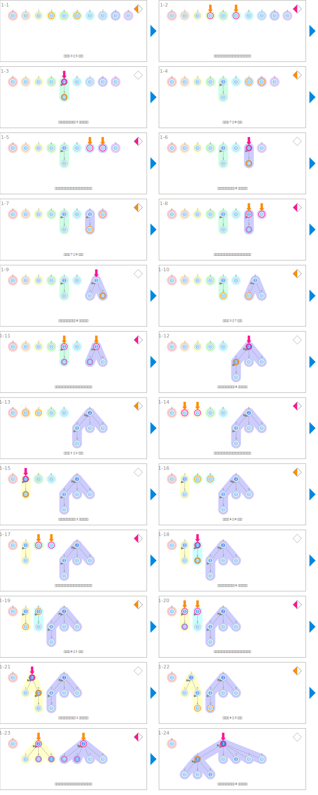

符号
| 数据 | ||
|---|---|---|
| 秩 | rank | |
| 集合的合并 | ||
|---|---|---|
| 求给定的两个节点的根（代表） | root1 ← findSet(x) root2 ← findSet(y) |
|
 |
指向合并的根（代表） | root1, root2 |
 |
比较根的秩 | if rank[x] > rank[y]: |
 |
指向被选中的新的根（代表） | x 或者 y |
| 秩加 1 | rank[y]++ | |
 |
修改父节点 | parent[?] ← ? |
 |
进行路径压缩 | parent[x] ← findSet(parent[x]): |
动画
集合的合并
